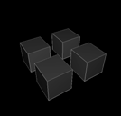

A texture set manages a hierarchy of textures.
Texture sets are stored in independend files (.kts), so
you can reuse them in many projects.
You may load and edit more than one texture set into kodisein
but only the texture set that is specified in the global
modulators inspector will be used by your project.
The Hierarchy
You create a texture set by connecting a 3-level hierarchy of
the following modules:
Texture Set Module

The texture set module is the root module of each texture
set. The only purpose of this module is to store the file name
under which the set will be stored.
Texture Batch Module

You should use the batch level to order your textures by themes
or general usage. For example, you could use the first batch for
background images and assign each of the remaining batches to
one object in your scene.
Texture File Module
The second and third level of the hierarchy consist of texture
file modules.
The second level simply contains the different textures of a
batch. You use this level for example to define the textures for
different parts of an object.
Texture Versions
The third level should be used to store different versions of
a texture, e.g. image sequences or similar patterns. This enables
you to create time-lapse like animations by rapidly changing the
version index.
Read the mini tutorial 'textures'
for a more information.
File Formats
kodisein recognizes texture files by their suffix. The following
suffixes/fileformats are recognized:
tga
tif, tiff
jpg
png
gif
bmp
pcx
xcf
lbm
xpm
Please note, that OpenGL requires the texture's width and hight
to be a power of 2. kodisein will automatically scale the images
but this will significantly slow down the application while loading
image files.
Opening & Saving & Closing Texture Sets
Open
There exist several ways to open a texture set:
Enter the path of a texture set file in the global
modulator's inspector and press  . .
Activate the menu item file > open... Search and open
a texture set file in the appearing filebrowser.
If you open a kodisein project in which the global
modulator has a texture set file defined, the specified texture
set will be opened automatically.
Save
Save a texture set by selecting a module in it's hierarchy and
activate the menu item file > textures > save.
The texture set will be saved under the filename you specified
in the texture set module's inspector.
Close
To close a texture set, select a module in it's hierarchy and
activate file > textures > close
|